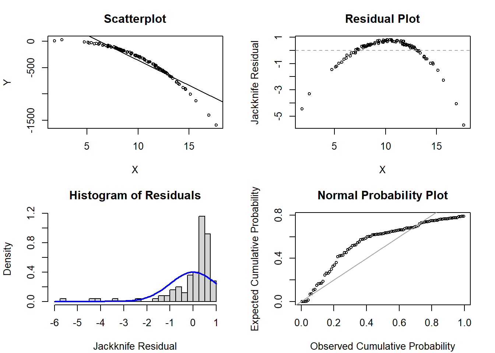
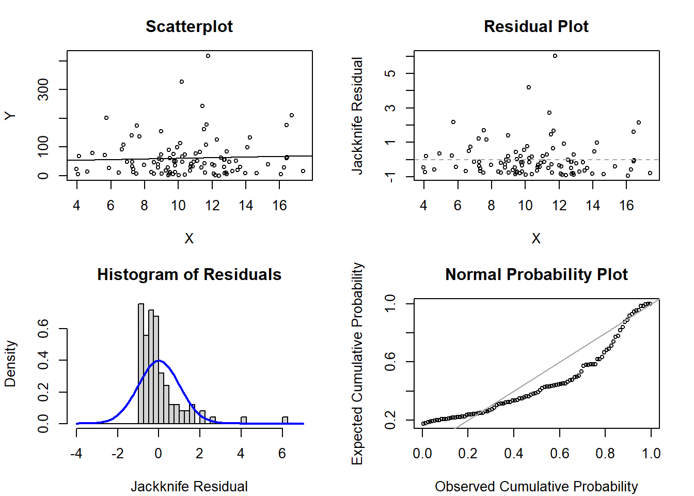
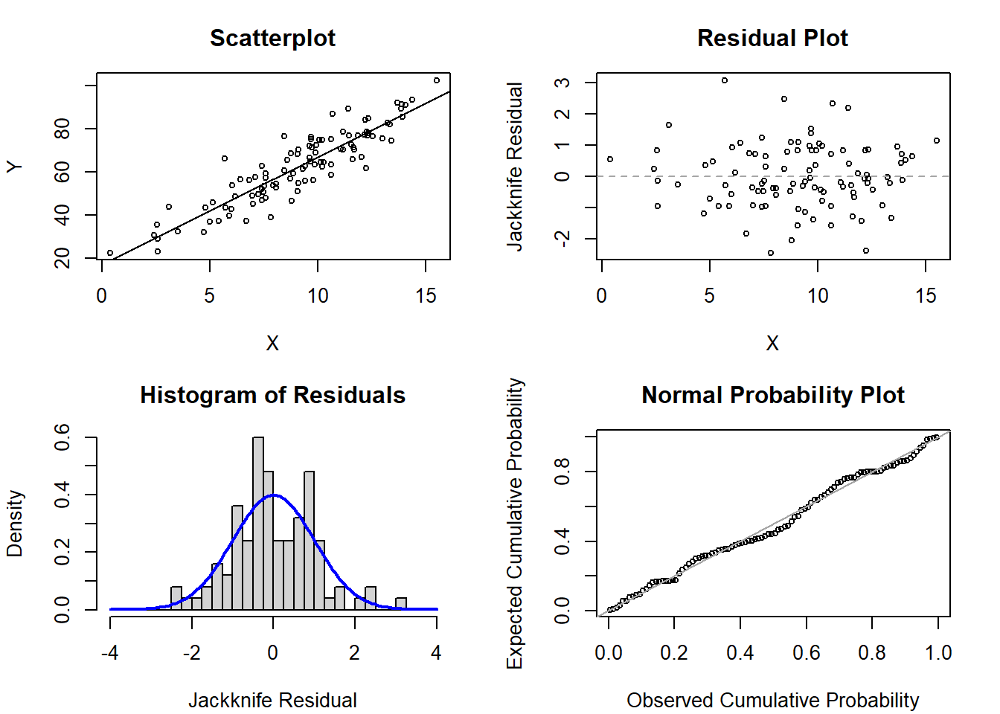
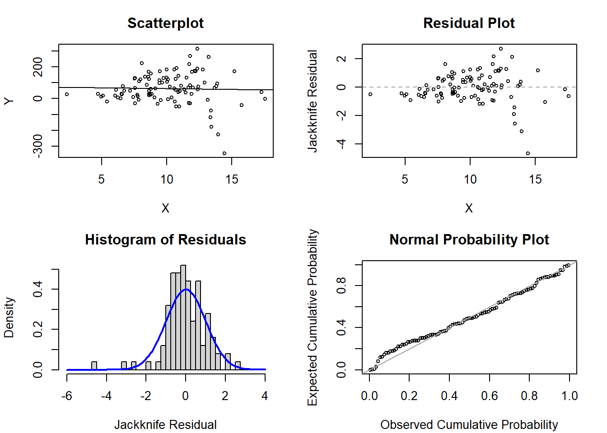
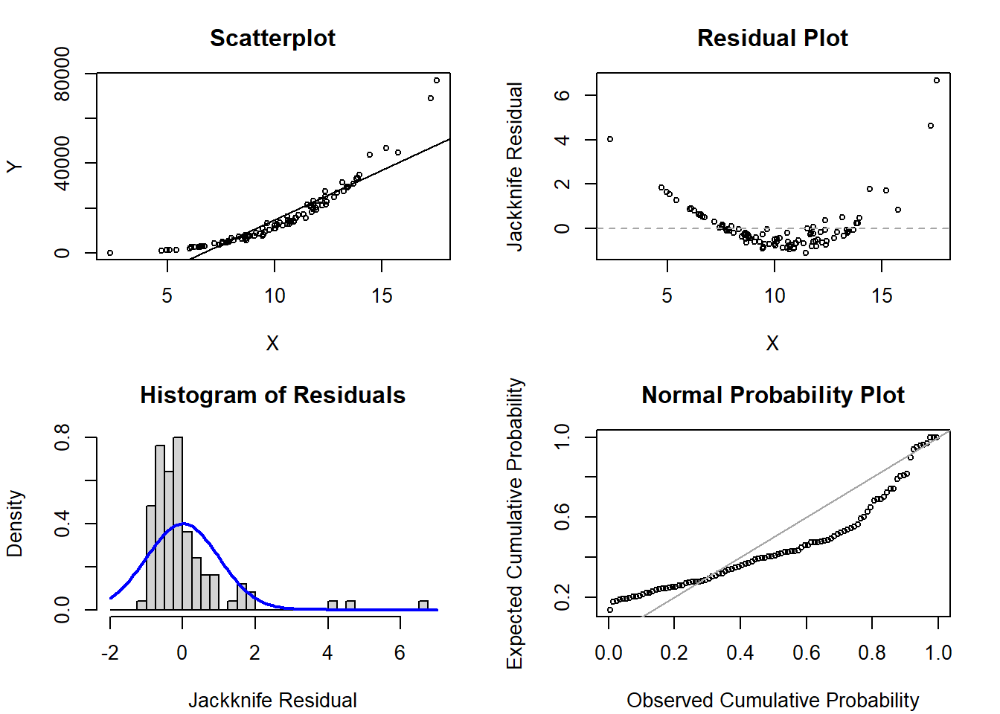

Week 8 Practice Problems
This page includes optional practice problems, many of which are structured to assist you on the homework with Solutions provided on a separate page. Data sets, if needed, are provided on the BIOS 6618 Canvas page for students registered for the course.
This week’s extra practice exercises are focusing on examining the diagnostic plots for various regression models simulated to violate various regression assumptions. The interpretation of models with transformations are also explored for further practice.
Exercise 1: Diagnostic Examination
For each of the following sets of plots, identify which, if any, assumptions may be violated for the simple linear regression model.
1a. Scenario 1
1b. Scenario 2

1c. Scenario 3

1d. Scenario 4

1e. Scenario 5

Exercise 2: Data Transformation Interpretations
We will use the blood storage dataset from our course site:
Code
dat <- read.csv('../../.data/Blood_Storage.csv')The dataset includes 316 men who had undergone radical prostatectomy and received transfusion during or within 30 days of the surgical procedure and had available PSA follow-up data .
For each of the following models, what are the estimates of the intercept and slope and how would you interpret them? If possible, for transformations of the dependent variable, \(Y\), also transform the estimate of your slope and its 95% confidence interval back to its non-transformed scale and interpret.
2a. \(Y\), \(X\)
Code
summary(lm(PVol ~ Age, data=dat))
Call:
lm(formula = PVol ~ Age, data = dat)
Residuals:
Min 1Q Median 3Q Max
-39.527 -15.817 -4.367 6.451 205.105
Coefficients:
Estimate Std. Error t value Pr(>|t|)
(Intercept) -13.3823 14.1790 -0.944 0.346
Age 1.1443 0.2308 4.959 1.18e-06 ***
---
Signif. codes: 0 '***' 0.001 '**' 0.01 '*' 0.05 '.' 0.1 ' ' 1
Residual standard error: 29.1 on 305 degrees of freedom
(9 observations deleted due to missingness)
Multiple R-squared: 0.07461, Adjusted R-squared: 0.07158
F-statistic: 24.59 on 1 and 305 DF, p-value: 1.178e-062b. \(log(Y)\), \(X\)
Code
summary(lm(log(PVol) ~ Age, data=dat))
Call:
lm(formula = log(PVol) ~ Age, data = dat)
Residuals:
Min 1Q Median 3Q Max
-0.85316 -0.25833 -0.02639 0.18992 1.56272
Coefficients:
Estimate Std. Error t value Pr(>|t|)
(Intercept) 2.83345 0.18124 15.63 < 2e-16 ***
Age 0.01820 0.00295 6.17 2.17e-09 ***
---
Signif. codes: 0 '***' 0.001 '**' 0.01 '*' 0.05 '.' 0.1 ' ' 1
Residual standard error: 0.3719 on 305 degrees of freedom
(9 observations deleted due to missingness)
Multiple R-squared: 0.111, Adjusted R-squared: 0.108
F-statistic: 38.07 on 1 and 305 DF, p-value: 2.169e-092c. \(\sqrt{Y}\), \(X\)
Code
summary(lm(sqrt(PVol) ~ Age, data=dat))
Call:
lm(formula = sqrt(PVol) ~ Age, data = dat)
Residuals:
Min 1Q Median 3Q Max
-2.6025 -0.9659 -0.1915 0.5813 8.4549
Coefficients:
Estimate Std. Error t value Pr(>|t|)
(Intercept) 3.05356 0.75625 4.038 6.83e-05 ***
Age 0.07016 0.01231 5.700 2.82e-08 ***
---
Signif. codes: 0 '***' 0.001 '**' 0.01 '*' 0.05 '.' 0.1 ' ' 1
Residual standard error: 1.552 on 305 degrees of freedom
(9 observations deleted due to missingness)
Multiple R-squared: 0.09628, Adjusted R-squared: 0.09332
F-statistic: 32.5 on 1 and 305 DF, p-value: 2.819e-082d. \(Y\), \(log(X)\)
Code
summary(lm(PVol ~ log(Age), data=dat))
Call:
lm(formula = PVol ~ log(Age), data = dat)
Residuals:
Min 1Q Median 3Q Max
-37.901 -15.970 -4.164 6.732 206.188
Coefficients:
Estimate Std. Error t value Pr(>|t|)
(Intercept) -215.75 55.63 -3.878 0.000129 ***
log(Age) 66.33 13.55 4.895 1.59e-06 ***
---
Signif. codes: 0 '***' 0.001 '**' 0.01 '*' 0.05 '.' 0.1 ' ' 1
Residual standard error: 29.13 on 305 degrees of freedom
(9 observations deleted due to missingness)
Multiple R-squared: 0.07285, Adjusted R-squared: 0.06981
F-statistic: 23.97 on 1 and 305 DF, p-value: 1.593e-062e. \(log(Y)\), \(log(X)\)
Code
summary(lm(log(PVol) ~ log(Age), data=dat))
Call:
lm(formula = log(PVol) ~ log(Age), data = dat)
Residuals:
Min 1Q Median 3Q Max
-0.8618 -0.2634 -0.0178 0.1913 1.5541
Coefficients:
Estimate Std. Error t value Pr(>|t|)
(Intercept) -0.4363 0.7104 -0.614 0.54
log(Age) 1.0673 0.1730 6.169 2.18e-09 ***
---
Signif. codes: 0 '***' 0.001 '**' 0.01 '*' 0.05 '.' 0.1 ' ' 1
Residual standard error: 0.3719 on 305 degrees of freedom
(9 observations deleted due to missingness)
Multiple R-squared: 0.1109, Adjusted R-squared: 0.108
F-statistic: 38.06 on 1 and 305 DF, p-value: 2.181e-09